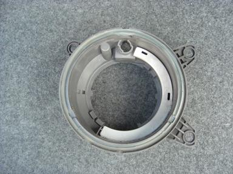
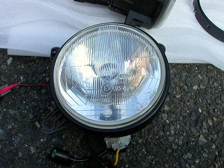
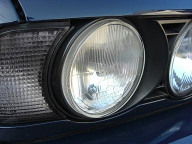

2006/10/5 脱プロジェクター！ LoビームをhellaからCIBIEに交換
 まずは、hellaのヘッドライトをばらします。使うのはこのフレーム部分のみです。 |
 このフレームに、ハコスカなどの適当なCIBIEをくっつけます。レンズの直径はほとんどE34と同じ |
 バーナーがH1からH4になったので、H4 HI/LO切り替えを付けて4灯HI化も＾＾ なによりも、デリケートな純正リフレクターを気にしないで良くなったのがイイ！ 明るさも十分です。
|